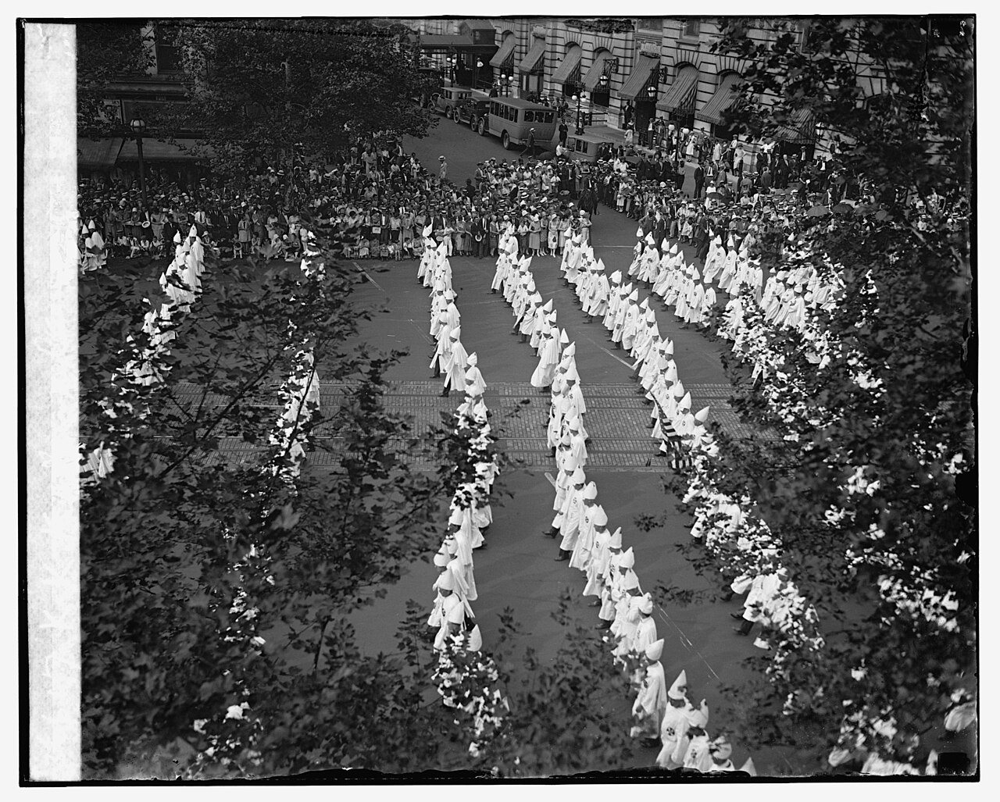
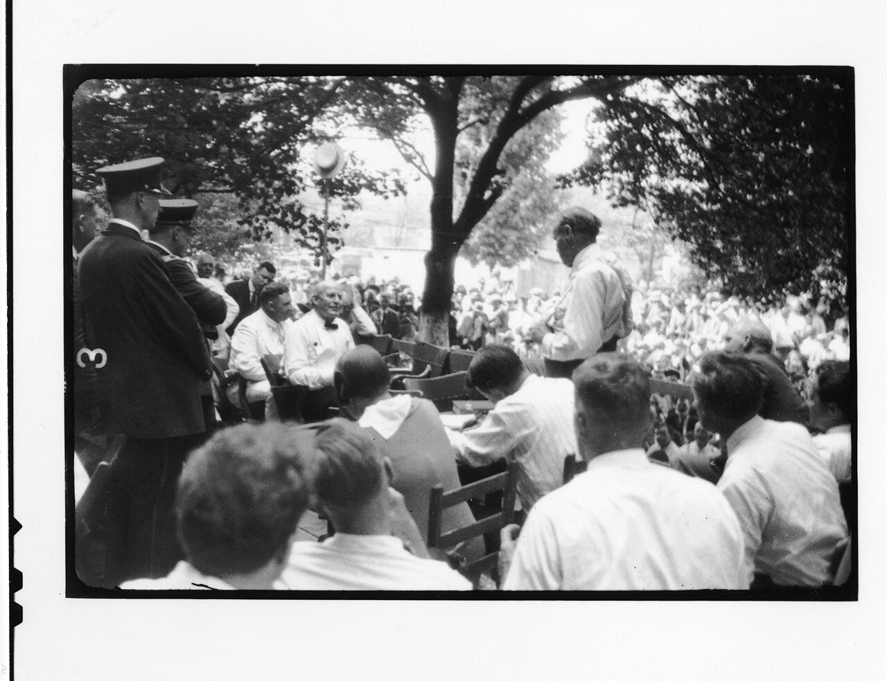
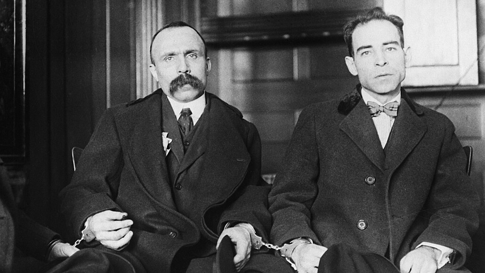

Directions: This is a jigsaw. Half the class works Part 1, the restriction case, and half works Part 2, the belief case. Work only your part first and answer its questions in full sentences. Then pair with a student from the other half, teach your case in two minutes, and complete Part 3 together.
Source: Annual quotas proclaimed under the Immigration Act of 1924 (the National Origins Act), quota year 1924 to 1925. Each number is the total number of immigrants admitted from that country in one year.
| Country | Annual quota, 1924 law |
|---|---|
| Germany | 51,227 |
| Great Britain and Northern Ireland | 34,007 |
| Irish Free State | 28,567 |
| Sweden | 9,561 |
| Norway | 6,453 |
| Poland | 5,982 |
| Italy | 3,845 |
| Russia | 2,248 |
| Greece | 100 |
| All countries | 164,667 |
The formula behind the table: the Emergency Quota Act of 1921 allowed each country 3 percent of its foreign born counted in the census of 1910. The 1924 law cut the rate to 2 percent and moved the census year back to 1890, before the large immigration from southern and eastern Europe had begun. The 1924 law also barred nearly all immigration from Asia.
Compare the German and Italian quotas. How many Italians could enter in a year for each German, roughly, and which single choice in the formula produced that result?
The table never mentions race, religion, or character. Explain how it still ranks peoples, and identify the point in the process where the ranking happens.
Source: Hiram W. Evans, Imperial Wizard of the Ku Klux Klan, The Klan's Fight for Americanism, The North American Review, March 1926. Evans led the Klan at the height of its national membership, and a leading literary magazine gave him its pages to recruit support in his own words.
We are a movement of the plain people. ... We are demanding, and we expect to win, a return of power into the hands of the everyday, not highly cultured, not overly intellectualized, but entirely unspoiled and not de-Americanized, average citizen of the old stock. ... These are, in the first place, a blend of various people of the so-called Nordic race, the race which, with all its faults, has given the world almost the whole of modern civilization. The Klan does not try to represent any people but these.
Evans never names an enemy in this passage. List the groups his phrases place outside the old stock, and quote the phrase that does the work in each case.
Why would a national magazine printing this appeal, and readers joining in large numbers, tell us more about the 1920s than the Klan's night violence alone?
Source: Photograph by the National Photo Company, Washington, D.C., August 8, 1925. Library of Congress.

The marchers wore the robe and hood of the order in daylight, on the main avenue of the capital, in formed ranks, with spectators lining the street. The Klan staged the parade to display its size and its claim to stand inside American public life, not outside it.
What does this photograph prove that the Evans article by itself cannot prove? Name two things visible in the image and what each one establishes.
A parade is a claim made in public. State the claim this parade made about who counted as a real American, and name the evidence in the photograph for your reading.
Source: Transcript of the examination of William Jennings Bryan by Clarence Darrow, State of Tennessee v. John Thomas Scopes, Dayton, Tennessee, July 20, 1925, as reproduced in the Famous Trials collection of the University of Missouri Kansas City School of Law. The session was held outdoors because of the heat and the crowd.

DARROW: You claim that everything in the Bible should be literally interpreted?
BRYAN: I believe everything in the Bible should be accepted as it is given there. ...
DARROW: Does the statement, The morning and the evening were the first day, ... mean anything to you?
BRYAN: I do not think it necessarily means a twenty-four-hour day. ... My impression is they were periods, but I would not attempt to argue as against anybody who wanted to believe in literal days. ...
DARROW: But what do you think that the Bible itself says? Do you know how that estimate (of the year of the Flood) was arrived at? ... What do you think?
BRYAN: I do not think about things I don't think about.
DARROW: Do you think about things you do think about?
BRYAN: Well, sometimes.
Bryan came to Dayton to defend a literal reading of Genesis. Quote the line in which his own testimony moves away from that position, and explain the move.
The charge against Scopes carried a fine of 100 dollars. Why did newspapers across the country print this exchange at length? Answer with what the exchange put on trial besides Scopes.
Source: Letters of Bartolomeo Vanzetti, written August 21, 1927, two days before his execution with Nicola Sacco, as published in The Letters of Sacco and Vanzetti, edited by Marion Denman Frankfurter and Gardner Jackson, 1928. Dante is Sacco's young son.

Vanzetti to Dante Sacco: Remember, Dante, remember always these things; we are not criminals; they convicted us on a frame-up; they denied us a new trial; and if we will be executed after seven years, four months and seventeen days of unspeakable tortures and wrong, it is for what I have already told you; because we were for the poor and against the exploitation and oppression of the man by the man.
Vanzetti and Sacco, in a joint letter to their defense committee the same day: Only two of us will die. Our ideal, you our comrades, will live by millions; we have won, but not vanquished.
Vanzetti gives two different accounts of why the men were convicted: the evidence, and their beliefs and origins. Separate the two accounts and quote the words that carry each one.
These letters were written to be read after the writers were dead, and the defense committee published them. How does that purpose affect how a historian should use them as evidence?
Source: Summary of the case record and its coverage, 1921 to 1927, prepared for this lesson from the trial record and contemporary reporting. The quotation is from Vanzetti's statement to the court before sentencing, Dedham, April 9, 1927, as reported from the trial.
A Dedham jury convicted Sacco and Vanzetti of murder on July 14, 1921, after a trial that rested on disputed witness identification and disputed firearms evidence. Judge Webster Thayer, who had presided at the trial, heard and denied the motions for a new trial. The Massachusetts Supreme Judicial Court upheld the convictions. In 1927 Governor Alvan Fuller appointed a committee headed by Harvard president A. Lawrence Lowell to review the case. The committee reported that the trial had been fair and the verdict supported, and Fuller refused clemency. Protests on the men's behalf were held in cities across the United States, Europe, and Latin America. Both men were executed on August 23, 1927.
Before sentence was passed, Vanzetti addressed the court: I am suffering because I am a radical and indeed I am a radical; I have suffered because I was an Italian, and indeed I am an Italian.
List the institutions that reviewed this case between 1921 and 1927 and the decision each one reached. What pattern do the decisions form?
Vanzetti's sentence names two grounds of suffering and leaves out the robbery entirely. Explain what he is asking the court, and later readers, to judge instead of the evidence.
Meet with a partner from the other half of the class. Rank the six stations from 1 to 6 by how strongly each one, standing alone, shows what the fights of the 1920s were about. (1 = Strongest, 6 = Weakest). Be ready to defend your first and last choices.
______ Station 1: The Quota Tables
______ Station 2: A Klan Appeal in Print
______ Station 3: The March on Washington
______ Station 4: Bryan on the Stand
______ Station 5: Letters from the Death House
______ Station 6: The Verdict and the World
State the single question that connects the whole docket, and argue for it in a short paragraph. Your paragraph must use one source from Part 1 and one source from Part 2, and it must say where the evidence for each side of the docket is strongest.
Compare the German and Italian quotas. How many Italians could enter for each German, roughly, and which choice in the formula produced that result? Germany received 51,227 places and Italy 3,845, so roughly thirteen Germans could enter for each Italian (51,227 divided by 3,845 is about 13.3). The result came from the choice of the census of 1890 as the base year. That census counted the population before the large Italian, Polish, and Russian immigration, so a 2 percent rate applied to it produced a small Italian quota and a large German one.
The table never mentions race, religion, or character. How does it still rank peoples, and where does the ranking happen? The ranking happens in the formula, before any person applies. By fixing each nation share from an 1890 population count, the law assigned worth by national origin: northern and western Europeans were allotted tens of thousands of places, southern and eastern Europeans a few thousand or a few hundred, and most Asians were barred outright. No official had to state a judgment about an individual, because the table had already made the judgment about the group.
Evans never names an enemy in this passage. List the groups his phrases place outside the old stock, and quote the phrase that does the work. The passage works by definition rather than by naming. The old stock is defined as the everyday, not highly cultured, not overly intellectualized, but entirely unspoiled and not de-Americanized, average citizen, and as a blend of various people of the so-called Nordic race. Placed outside by those phrases are immigrants and their children (de-Americanized), the highly cultured and intellectualized (named as a defect), Catholics and Jews (outside a Nordic and, in the Klan program, Protestant definition), and Black Americans (outside the Nordic race as Evans uses the term). The closing line does the final work: The Klan does not try to represent any people but these.
Why does a national magazine printing this appeal tell us more about the 1920s than the Klan's night violence alone? Violence can be the work of a fringe. A leading literary magazine giving its pages to the Klan national leader, and a membership in the millions buying robes and paying dues, show the argument operating inside respectable public life. The station shows the definition of the real American being argued in print, in the open, by an organization confident it spoke for the majority.
What does the photograph prove that the Evans article cannot prove? Scale and public acceptance. The formed ranks filling the avenue show numbers no article can demonstrate, and the daylight setting in the capital, with crowds watching from the sidewalks and no attempt at concealment beyond the uniform itself, shows an organization operating openly in the seat of government. Accept any two visible details tied to a conclusion: the length of the column, the uniforms worn in public, the spectators, the urban capital setting.
State the claim this parade made about who counted as a real American, and name the evidence for your reading. The claim is that the Klan, and the white Protestant old stock it said it represented, stood at the center of the nation and could occupy its most public space in force. The evidence is the choice of Washington and its main avenue, the military order of the ranks, and the size of the column. The parade was an argument made with bodies: this group belongs here, in numbers, in daylight.
Quote the line in which Bryan's testimony moves away from a literal reading, and explain the move. I do not think it necessarily means a twenty-four-hour day, and, asked what the days were, My impression is they were periods. The Butler Act prosecution rested on the Bible account read literally, including days of creation. Its Bible expert, on the stand, read the central word of that account as a long period rather than a day, which is the kind of interpretation the defense had argued for.
Why did newspapers print this exchange at length? The legal question was narrow: whether one teacher had broken one state law, a point the defense barely contested. The exchange put two public systems of knowledge on trial instead: a literal reading of scripture defended by the most famous orator in the country, and the scientific and scholarly reading pressed by the most famous trial lawyer. Bryan's concession and his I do not think about things I don't think about gave editors a contest readers could judge for themselves, which is why the testimony, not the 100 dollar fine, carried the story.
Separate Vanzetti's two accounts of the conviction and quote the words that carry each. The evidence account: they convicted us on a frame-up; they denied us a new trial. On this account the verdict failed as a judgment on evidence. The identity account: because we were for the poor and against the exploitation and oppression of the man by the man. On this account the men were punished for their anarchist beliefs and, as the sentencing statement adds, for being Italian. Strong answers note that Vanzetti holds both at once: a framed case was the method, and their beliefs were the reason a framed case could succeed.
How does the purpose of the letters affect their use as evidence? The letters are advocacy written for posterity by a man who knew he would be executed, and published by a defense committee building a public case. They are strong evidence of what Vanzetti believed, of how the defense wanted the case understood, and of the language of the movement. They are weak evidence, standing alone, of the facts of the robbery, because the writer was a party to the case arguing his innocence. Corroboration from the trial record is required before using them for what happened in South Braintree.
List the institutions that reviewed the case and the decision each reached. What pattern do the decisions form? The Dedham jury convicted in 1921. Judge Thayer denied the motions for a new trial. The Massachusetts Supreme Judicial Court upheld the convictions. The Lowell committee reported the trial fair and the verdict supported in 1927, and Governor Fuller refused clemency. The pattern is a closed sequence: every reviewing body belonged to the same state establishment the defense accused of prejudice, and each one confirmed the body before it, which is why the defense took its case to the public and to foreign opinion instead.
What is Vanzetti asking the court and later readers to judge instead of the evidence? He asks them to judge the grounds of the prosecution itself. By naming his radicalism and his Italian birth as the causes of his suffering, and omitting the robbery, he argues that the state tried his identity and beliefs and called it a murder case. Whether a reader accepts that claim or not, the statement defines the question the case left open: whether the verdict measured the evidence against two men or the standing of two kinds of men in 1920s America.
Rankings will vary. Full credit should be awarded if the student: